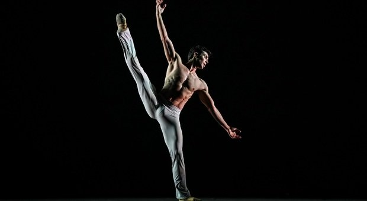
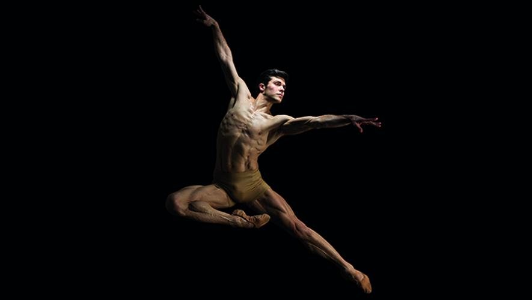
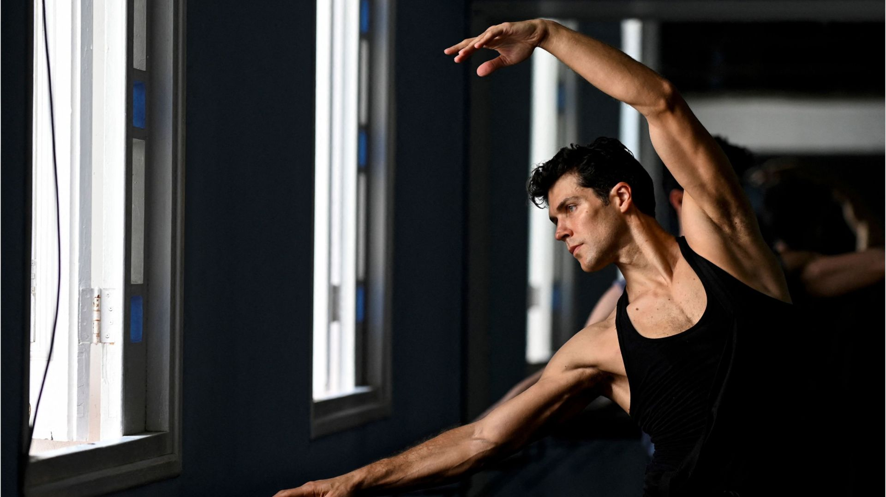
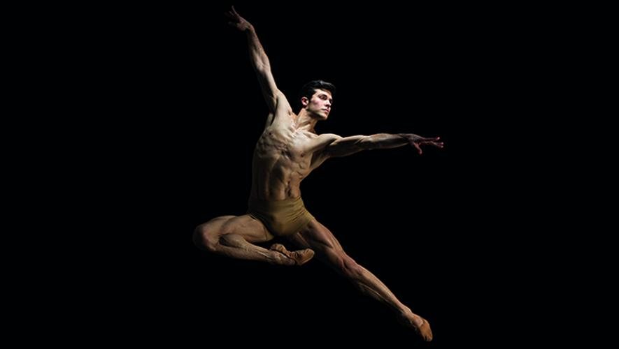
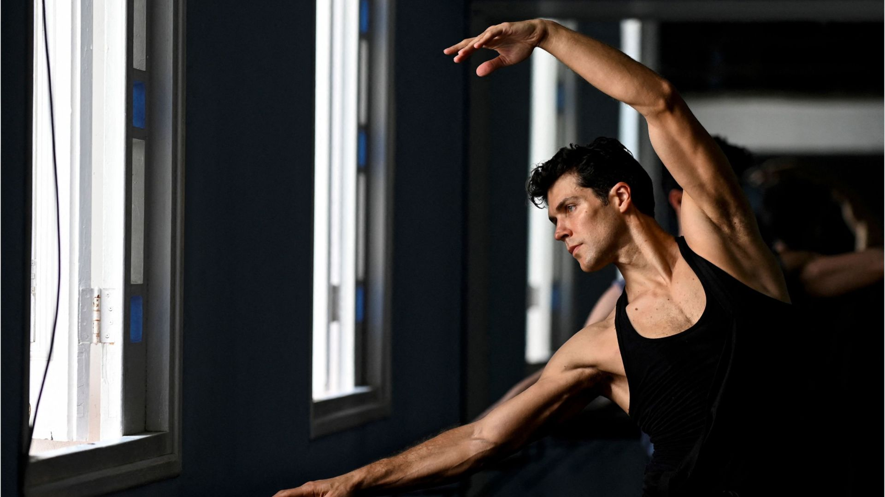

Roberto Bolle
Primo ballerino al mondo a essere contemporaneamente Étoile del Teatro alla Scala di Milano e Principal Dancer dell'American Ballet Theatre di New York. È Guest Artist al Royal Ballet.

Breve estratto da un'intervista
Cosa significa la danza per lei?
«Una vocazione che mi ha permesso di dare il meglio a ciò che di meraviglioso, luminoso e sacro ha quest’arte.
L’ho sempre vista come un ambito che va al di là della mia persona e che mi ha restituito bellezza, armonia e ricchezza interiore.
Ha forgiato la mia sensibilità. Se non avessi fatto il ballerino attraversando esperienze interpretative, emotive e fisiche così intense non avrei potuto lavorare a così stretto contatto con me stesso sia a livello umano che emotivo».
La danza è un atto d’amore?
«Emily Dickinson al riguardo dice una cosa definitiva: "che sia l’amore tutto ciò che esiste".
È ciò che noi sappiamo dell’amore».
 


